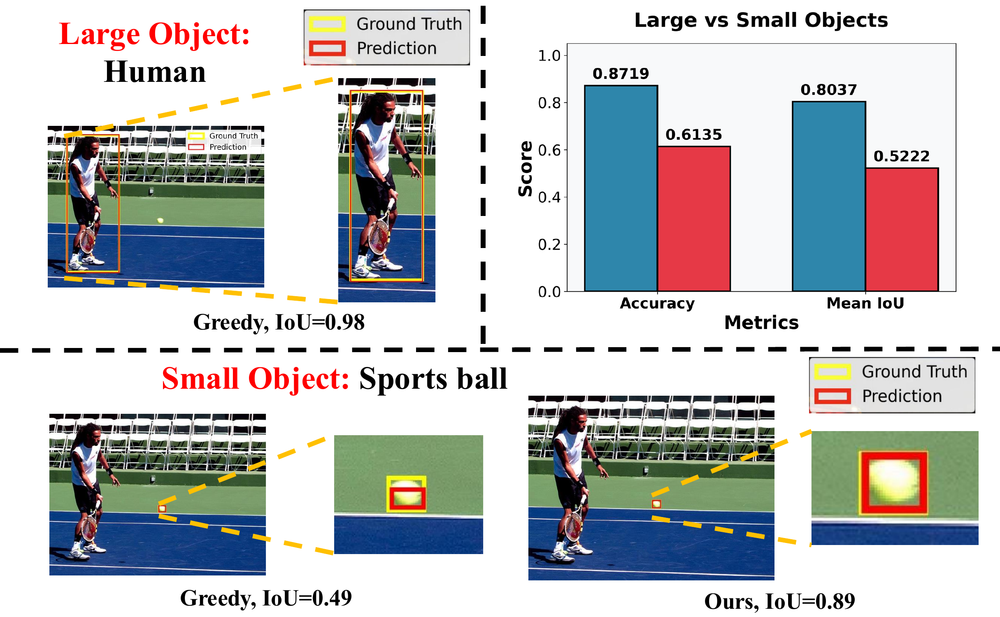
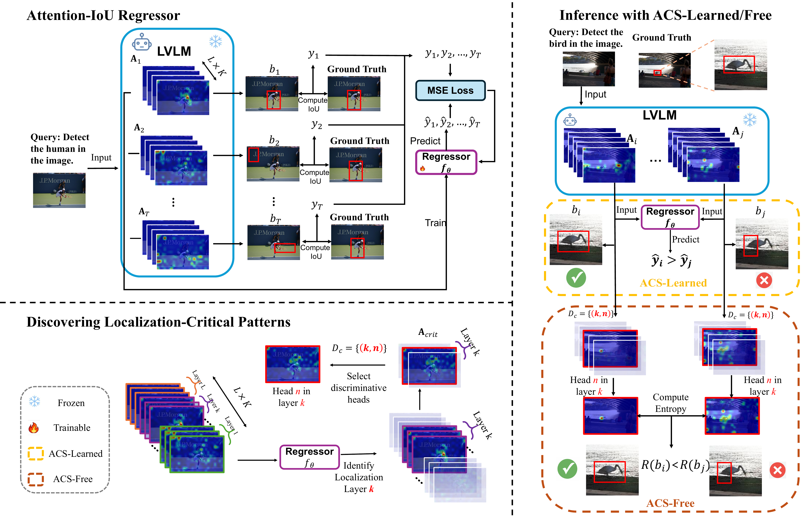
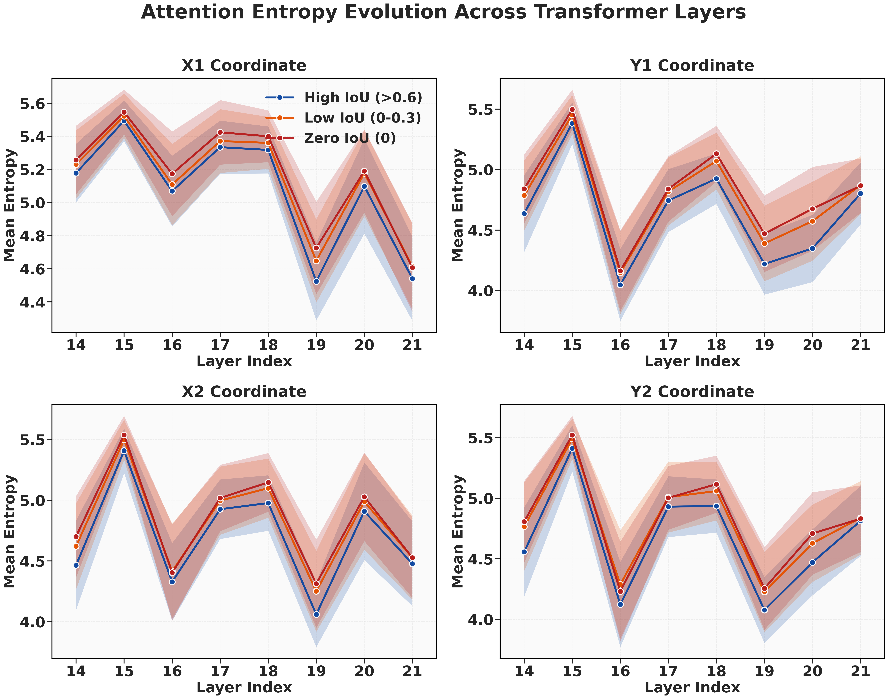
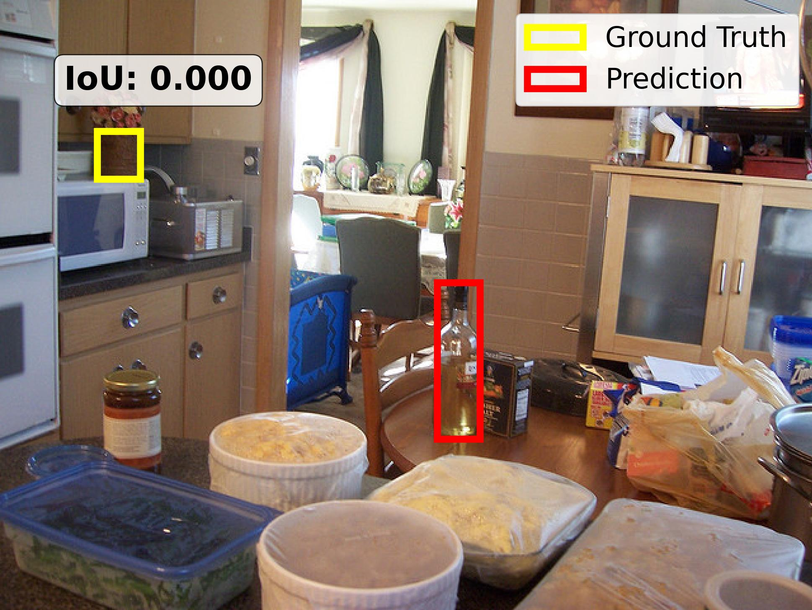
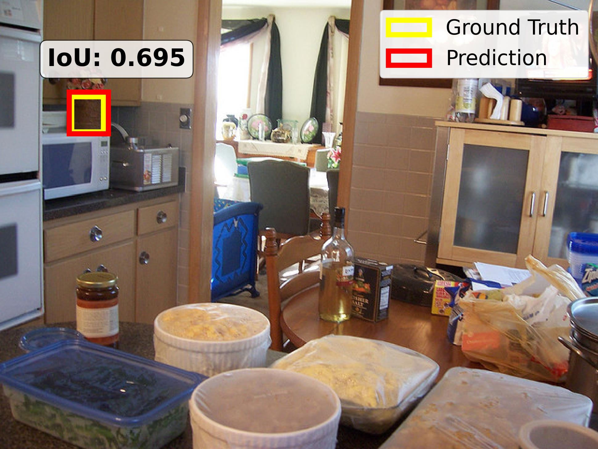
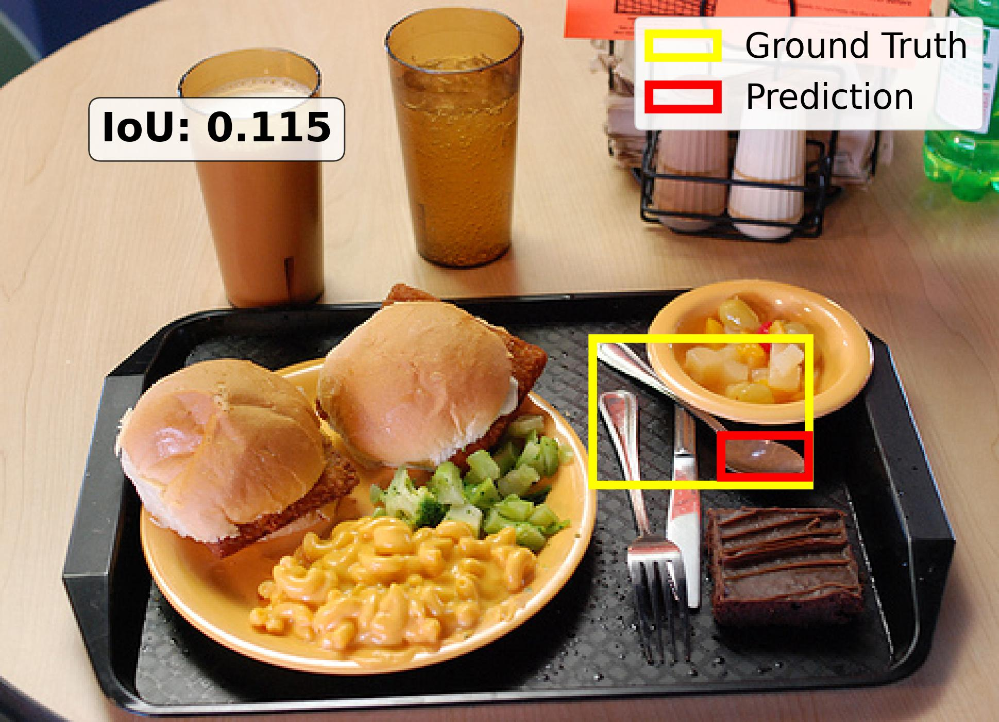
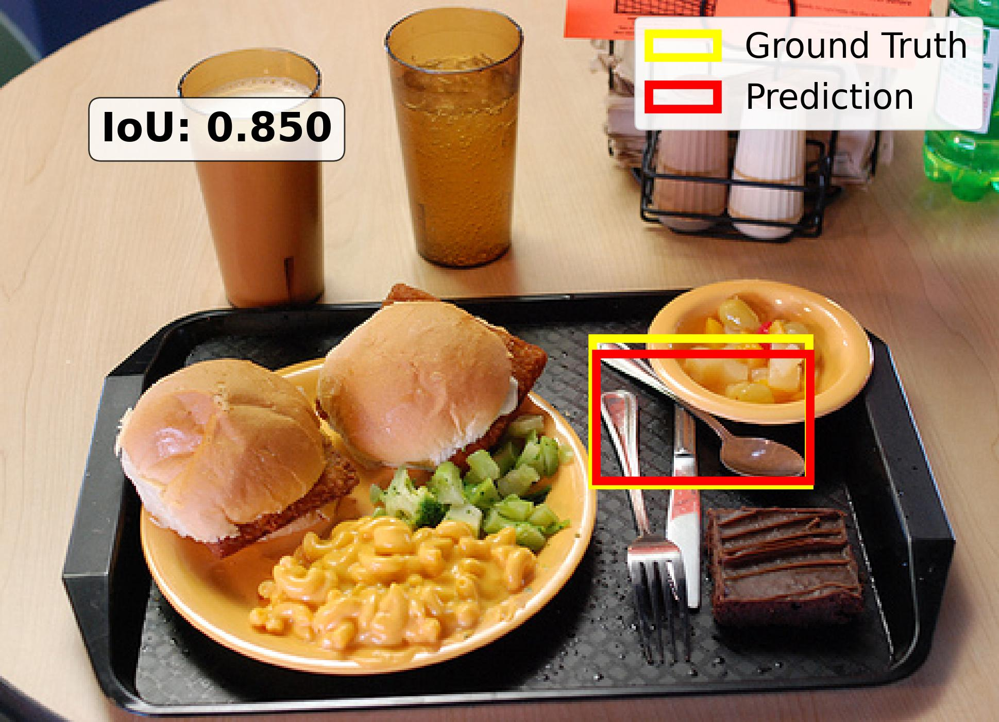
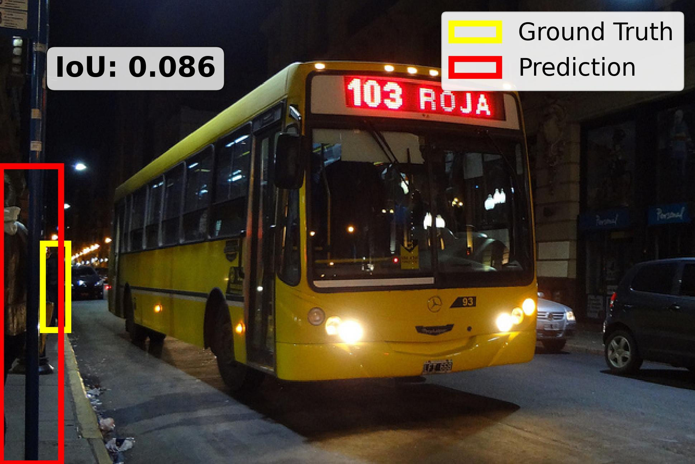
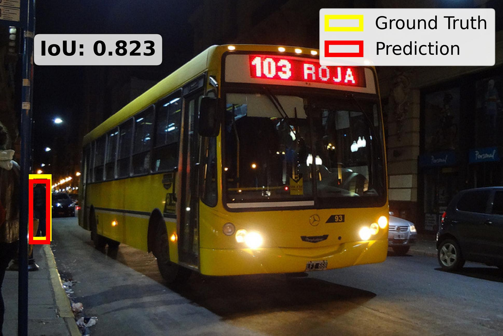

Large vision language models localize big objects well but miss small ones. We show their internal attention already knows which boxes are right — and use it to pick better ones, with no fine-tuning.
Can the internal attention of an LVLM tell us which small-object boxes are reliable — without any fine-tuning?
We give an affirmative answer. Attention structure in LVLMs encodes grounding quality: a lightweight IoU regressor trained solely on attention maps predicts box quality well (Pearson r > 0.67). This regressor powers ACS-Learned, the learned variant of our Attention-based Candidate Selection (ACS) framework, which picks the best box among multiple sampled candidates. By analyzing what the regressor learns, we reveal which transformer layers and heads matter most and derive ACS-Free: a training-free selector that ranks candidates by attention entropy on those discriminative heads — no learned component at inference. On COCO and Objects365, ACS delivers up to 19% self-improvement on small-object localization, with ACS-Free ranking best among all training-free methods.

State-of-the-art LVLMs such as Qwen2.5-VL and InternVL-3.5 can output bounding boxes directly, no detection head required. Yet performance collapses on small objects — exactly the distant pedestrians, signs, and tools that matter most for safety-critical perception.
Prior fixes add fine-tuning, external detectors, or hand-tuned decoding — all of which cost compute or change the model. We ask whether the model's own internal signals are enough.
Sample several candidate boxes, read out each one's attention maps, and let attention decide which box to trust. Two selectors emerge — one learned, one entirely training-free.

A lightweight regressor scores every sampled box directly from its attention maps and selects the highest-quality candidate. It confirms that attention carries a genuine localization-quality signal.
Gradient and entropy analysis of the trained regressor reveals a handful of discriminative heads. ACS-Free ranks candidates by attention entropy on those heads alone — no learned component at inference.
Inside localization-critical layers, accurate predictions produce concentrated, low-entropy attention over the right region, while poor predictions scatter attention. High-IoU boxes consistently show lower entropy than low- or zero-IoU boxes.
That single, interpretable signal — entropy on a few discriminative heads — is what ACS-Free exploits, turning a mechanistic finding into a deployable selection rule.

Across COCO and Objects365, on two different LVLM families, ACS improves small-object grounding over greedy decoding — and ACS-Free leads all training-free baselines.
| Method | Qwen2.5-VL-7B | InternVL-3.5-8B | ||
|---|---|---|---|---|
| COCO | Objects365 | COCO | Objects365 | |
| Greedy decoding | 61.4 | 43.0 | 49.1 | 21.9 |
| Best sampling baseline | 60.9 | 41.7 | 53.8 | 23.2 |
| ACS-Free (training-free) | 63.4 | 43.0 | 53.1 | 24.8 |
| ACS-Learned | 65.3 | 45.1 | 58.6 | 25.5 |
Small-object localization Acc@0.5 (%), best per column in teal. Baselines select from N=10 sampled responses. Full tables and ablations are in the paper.
Each column is a small object — top: Greedy decoding, bottom: our ACS selection. Yellow = ground truth, red = prediction; ACS recovers tight boxes where greedy drifts.






@article{yang2025acs, title = {Self-Improving Small Object Grounding in LVLMs}, author = {Yang, Tianze and Shi, Yucheng and Sun, Ruitong and Liu, Ninghao and Sun, Jin}, year = {2025}, note = {University of Georgia} }